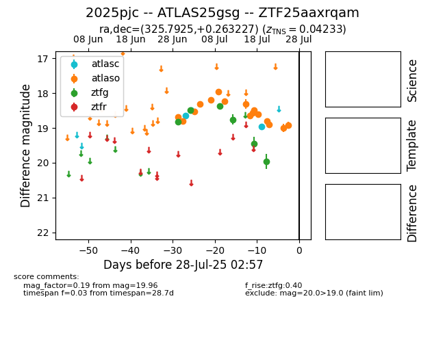

Target 2025pjc at 2025-07-28 02:57, see:
FINK: fink-portal.org/2025pjc
Lasair: lasair-ztf.lsst.ac.uk/objects/2025pjc
ALeRCE: alerce.online/object/2025pjc
TNS: wis-tns.org/object/2025pjc
YSE: ziggy.ucolick.org/yse/transient_detail/2025pjc
alt names
ZTF25aaxrqam (ztf,fink)
2025pjc (tns,yse)
ATLAS25gsg (atlas)
coordinates:
equatorial (ra, dec) = (325.7925,+0.26323)
galactic (l, b) = (56.1900,-37.16465)
photometry
last atlasc=18.95, atlaso=18.92, ztfg=19.96
3 atlasc, 17 atlaso, 6 ztfg detections
